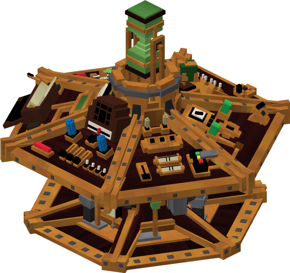

TARDIS 控制台控制
本页是关于 TARDIS 控制台控件的功能、位置和操作的参考。

控制布局
每个控制台单元的控件都有不同的布局。用一只手握住游戏中的 Tardis Manual，并将鼠标悬停在控制台的不同部分，以了解每个控制台的布局。
功能列表
通信器
关于
允许塔迪斯拦截遇险信号。这些求救信号可以是玩家发出的信号，也可以是其他方式。
使用
安装所需的组件
- 在引擎的组件面板上安装间隙天线
发送信号
- 如果没有等待的遇险信号，请右键单击此控件
- 在屏幕上显示的文本框中输入消息
- 在屏幕上显示的文本框中输入消息
定位信号
- 把塔迪斯飞到不同的地方
- 当塔迪斯着陆时，如果它检测到遇险信号，它会发出蜂鸣声或铃声，这取决于控制台
- 你可以选择接受或忽略这个信号
航行到遇险信号处
- 右键单击通信器控件。如果塔迪斯发现了遇险信号，一个GUI就会打开。否则，将没有GUI
- 要移动到信号的位置，按下 Accept 按钮
- 用油门和手刹起飞
忽略遇险信号
- 右键单击通信器控件。如果塔迪斯发现了遇险信号，一个GUI就会打开。否则，将没有GUI
- 按下 Ignore 按钮删除遇险信号。这将防止它使控制播放铃声
- 要忽略所有信号，请按下 Ignore all 按钮
坐标增量修改器
关于
这个控件调整 X Y Z 绘图仪的增量率。
比率是 1，10，100 和 1000。
缺省情况下，增量速率为 10。
使用
右击该按钮以循环切换增量率
坐标随机发生器
关于
该控件将随机重设当前维度的坐标，范围是 5000 个方块。
使用
右击按钮，用油门调节飞行速度，然后松开手刹，起飞
维度移相器
关于
此控件允许您选择目的地的维度（比如末地）。
这个控件将能够循环切换服务器中的所有维度，以及来自其他模组的维度。
使用
- 右击该按钮可遍历所有可用的维度
- 当您满意您的设置，调整飞行速度
- 松开手刹，起飞
门
关于
此控件允许你打开，关闭，解锁和锁上塔迪斯的门。
使用
- 右击按钮打开/关闭门
- 潜行并右击按钮以解锁或上锁
快速返回
关于
此控件允许你的时间飞船返回它最后着陆的位置。
使用
- 右击按钮将目的地设置为它着陆的前一个位置
手刹
关于
手刹，与油门一同使用。
如果塔迪斯的情绪处于消极状态，这可能会阻止塔迪斯自己起飞。
使用
- 右击手刹在 ON 和 OFF 之间切换
- ON 表示手刹已闭合。在这种状态下，塔迪斯不能去物质化
- OFF 表示手刹已断开。在这种状态下，塔迪斯可以去物质化
着陆类型选择器
关于
通过切换按钮，可以找到目的地的最高可用位置或最低可用位置。
如果您不确定目标坐标上的潜在风险，这是很有用的。如大瀑布、岩浆池等。
使用
- 右击按钮可在两种类型的搜索模式之间切换。它会切换是向上还是向下
- 当您对设置感到满意时，可使用油门调节飞行速度，然后将手刹拨至 ON，即起飞
监视器
关于
此控件允许您打开一个类似于 Tardis Monitor 的 Monitor GUI。这只存在于某些控制台单元类型中。
使用
- 右击或左击此控件以打开 Monitor GUI
补充燃料
关于
- 此控件允许你对塔迪斯进行燃料补给。如果你想长距飞行，这是必须的。
- 燃料的使用量每一次旅行将会有所不同，因此建议您在每一次飞行后为塔迪斯补充燃料。
- 在同一维度中跨越数百个区块或涉及到另一个维度的旅行将需要更多的燃料。
使用
- 右键单击按钮来切换加油状态
音速起子插座
关于
此控件允许玩家插入音速设备来接收或提供信息给他们的时间飞船。
允许玩家解锁不同的原理图，其中可以包括塔迪斯的内部，外部或控制台。
使用
- 使用中子谱计或其他方法下载音速起子的原理图
- 用音速起子右键单击音速起子插座
- 如果 Schematic 是有效的，将显示一条消息，说明 Schematic 的对象已经解锁。如果出现错误，或者原理图已经被解锁，将显示类似于 “This object has already been unlocked” 的消息。
稳定器
关于
此控件允许时间飞船的飞行模式在不稳定和稳定飞行之间切换。
使用
- 右击单击按钮在不稳定飞行和稳定飞行之间切换
油门/节流阀
关于
此控件允许控制塔迪斯通过时间漩涡的飞行速度以影响她的飞行时间。
此控件还允许塔迪斯安全的退出飞行模式。
使用
- 要增加飞行速度，请右击控件。每一次这样的交互都会使飞行速度提高 10%
- 要快速增加飞行速度到100%，请左键点击控件。
- 若要降低飞行速度，请潜行并右击控件。每一次这样的交互作用都会使飞行速度降低 10%
- 要快速降低飞行速度到 0%，请潜行并左击控件
心灵感应电路
关于
此控件允许你的时间飞船在 500 个方块的半径内定位附近的生物群落、结构和其他物体。
它也是飞行员和时间飞船之间的直接界面，让双方都能读懂对方的情绪。
使用
生物群落/结构定位器
- 右击控件以打开GUI。选择需要搜索的对象
- 要找到附近的结构，插入结构升级到引擎的升级面板，然后重新打开 GUI
情感翻译
- 潜行并右击心灵感应电路。你会收到类似于 “你感觉和你的塔迪斯联系更紧密了” 的信息
- 在塔迪斯的内部放置一张床
- 睡在床上。塔迪斯的心情将显示为聊天消息
X，Y，Z 绘图仪
关于
此控件允许通过调整 X，Y 和 Z 坐标来改变塔迪斯的空间位置。
坐标值可以增加或减少。递增率由坐标增量修改器控制。
使用
- 若要增加坐标值，请右键单击对应坐标值的按钮
- 若要减小坐标值，请潜行并右键单击对应坐标值的按钮
- 您的目的地位置的变化可以通过监视器查看